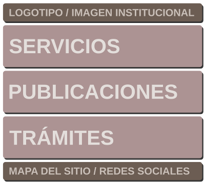
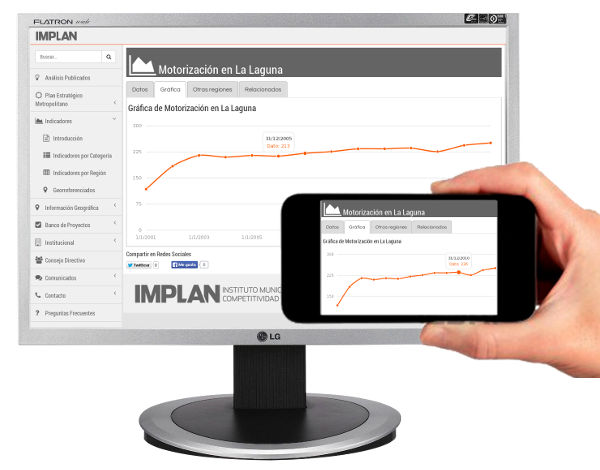

La Web se desarrolló entre marzo de 1989 y diciembre de 1990 por el inglés Tim Berners-Lee con la ayuda del belga Robert Cailliau mientras trabajaban en el CERN en Ginebra, Suiza, y publicado en 1992. Desde entonces, Berners-Lee ha jugado un papel activo guiando el desarrollo de estándares Web y por una Web semántica.
En sus primeros años, la mayoría de las personas no veían las páginas web como algo práctico, porque los primeros sitios de búsqueda basaban su modelo de negocio en ofertar las mejores posiciones en los resultados. En aquellos años, encontrar algo útil tomaba mucho tiempo. Sólo a partir de 1999, con la llegada del buscador de Google, se lograron que las búsquedas fueran más rápidas y sus resultados más efectivos.
Hoy en día, con la gran cantidad y variedad de dispositivos conectados a Internet, aunado a la gran relevancia que implica aparecer lo más alto en los resultados de los buscadores, han puesto sobre la mesa nuevas técnicas para la construcción de los sitios web.
Estándares abiertos
Los estándares abiertos son esenciales para la interoperabilidad y la libertad de opción, frente al cierre de los datos y la consecuente dependencia del proveedor. Esto hace que los estándares abiertos sean esenciales para los gobiernos, empresas, organizaciones y usuarios individuales de las tecnologías de la información. Si no fuera por ellos, podríamos estar limitados a un sólo navegador de Internet o que tendríamos que pagar derechos para crear páginas web.
La Web tiene sus bases en estándares abiertos como el protocolo HTTP y la codificación del HTML y CSS; así como de lenguajes de programación libres como el Javascript. Como ejemplo contrario, el Adobe Flash es un componente cerrado que funciona sólo con el reproductor de Adobe; desde hace años, empresas como Apple han evitado este formato por las complicaciones que provoca.
Este mismo requisito deben de tener los documentos descargables; recomendando evitar los tipos de archivos con formatos NO abiertos. Por ejemplo, poner archivos de Microsoft Word, Excel o PowerPoint limitan dichos contenidos a los usuarios tengan esos costosos programas, o bien que tengan copias no autorizadas de los mismos (lo se hace llamar como piratería de software). Es recomendable que los archivos que se pongan para su descarga sean de texto puro TXT, CSV, PDF, ODT o PNG.

Diseño y funcionalidad
La funcionalidad y el diseño de un sitio web son factores vitales que deben de complementarse para que el sitio web logre cautivar y servir al visitante. Para una institución, empresa u organización deben transmitir una imagen de acuerdo a su giro; básicamente de seriedad y solidez.
La recomendación es mantener la forma y diseño constantes en todo el sitio web; el no hacerlo puede confundir al visitante. Del mismo modo, que el sitio esté en el mismo dominio; por ejemplo, si una parte se accede en www.tudominio.com y otra en www.enotrodominio.com no solo es una debilidad de identidad, sino que los buscadores de Internet pueden registrarlo como dos entidades distintas.
La página de inicio del sitio web debe organizarse con claridad; ya que la mayoría de los visitantes necesitan encontar en ésta el enlace directo a lo que necesitan; con una distribución como en la siguiente ilustración:

Responsivo
Hoy en día hay una gran variedad de dispositivos que pueden conectarse a Internet. Cada día se suman nuevos tipos, como celulares inteligentes, tablets, televisores, consolas de video juegos, etc.
Originalmente las páginas web se diseñaban para verse en monitores de computadoras; pero los diferentes tamaños y disposiciones (horizontal y vertical) de las pantallas nos obligan a codificarlas para que sean responsivas, esto significa que se adapten al tamaño del aparato.
De entre todas las alternativas para hacer un sitio web responsivo destaca la generosa aportación de Twitter al brindar su plataforma Twitter Bootstrap como código abierto. Además de ser gratuito, es usado y mejorado por un gran número de desarrolladores; esto nos garantiza su confiabilidad y mejora constante.

HTML semántico y esquemas
HTML semántico es el uso de las etiquetas para reforzar la semántica, o el significado de la información en las páginas web. El HTML Semántico es procesado por los motores de búsqueda, como Google, Yahoo, Bing, etc. para tomar con certeza los elementos publicados.
Schema.org provee una colección de más de 50 esquemas, con buen número de ejemplos, que sirven de guía para implementarlos en los sitios web institucionales; ayudando a que los motores de búsqueda diferencien entre artículos, contactos, coordenadas geográficas, datos, lugares, organizaciones gubernamentales, productos y muchos más.
Continuará...
Con toda seguridad podemos afirmar que no dejarán de crearse nuevas tecnologías que impulsen la Web; y vaya que es relativamente joven. En 2014 la Web cumplió 25 años. Pero... ¿Cómo ha logrado ser lo que es? algunos de las razones son:
- Es universal: trabaja en gran número de dispositivos, en todos los sistemas operativos, con cualquier tipo de información, en cualquier lenguaje, todas las culturas, muchas maneras de conectividad y para personas con capacidades especiales.
- Está libre de pago por regalías.
- Es descentralizada. En la red de redes hay servidores en todo el mundo; además, en órbita, es usada por los astronautas a bordo de la Estación Espacial Internacional.
- Está construida con estándares abiertos y con la colaboración de todos.

{kind=link}